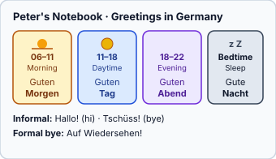

Hallo und Tschüss: Erste Begrüßungen
Mit einem KI-Tutor lernen
Ein KI-Tutor erklärt dir diese Seite und hilft dir bei den Aufgaben. Wähl deinen Assistenten:
Mit Claude öffnen Mit ChatGPT öffnen Mit Mistral Vibe öffnen
Du nutzt dein eigenes Konto beim Anbieter. Der Assistent ist kein Angebot von lernapps.net: lernapps liefert nur Inhalte und Aufgaben. Die Wahl gilt für alle Seiten, nur auf diesem Gerät.
Ankunft am Bahnhof Lindenberg
Peter (12) zieht mit seinen Eltern für ein Jahr nach Lindenberg! Um 15:00 Uhr steigen sie am Bahnhof aus dem Zug – auf dem Bahnsteig warten schon die Familienfreunde Frau Weber (Ms. Weber), Lukas (12) und Mina (9).
Aufgabe
Lösung
Guten Tag, Frau Weber! richtige Antwort
Guten Tag („Good day“) nutzt man in Deutschland von mittags bis zum frühen Abend.
Guten Morgen, Frau Weber!
Guten Morgen gilt nur am Morgen und Vormittag (bis etwa 11 Uhr), nicht um 15 Uhr.
Gute Nacht, Frau Weber!
Gute Nacht sagt man beim Schlafengehen, nicht wenn man jemanden am Bahnhof trifft.
Höfliche Begrüßungen folgen in Deutschland der Tageszeit: Guten Morgen (morgens), Guten Tag (tagsüber) und Guten Abend (abends).
Begrüßen und sich vorstellen
Die erste Karte in Peters Lindenberg-Heft ordnet jede Begrüßung ihrer Tageszeit zu (abends nach 22 Uhr bleibt man bei Guten Abend, Gute Nacht gilt erst zum Schlafen). Unter Freunden passt jederzeit Hallo!.

© CC0-1.0Peters Lindenberg-Heft: Welche Begrüßung zu welcher Uhrzeit passt.
Gut zu wissen: ß, Großschreibung und Gute Nacht
Der Buchstabe ß in heiße klingt wie ein scharfes „ss“ – du findest ihn unter Sonderzeichen. Alle deutschen Nomen schreibt man groß (Jahre = years, alt = old). Und Gute Nacht hat kein „-n“, weil die Nacht weiblich ist (warum, lernst du später).
| Deutsch | Beispiel · Hinweis | Englisch |
|---|---|---|
| Hallo! / Guten Tag! | Hallo Mina! Guten Tag, Frau Weber! Hi Mina! Hello, Frau Weber! | Hi! / Good day! (polite) |
| Tschüss! / Auf Wiedersehen! | Bye! (informal) / Goodbye! (formal) | |
| Ich heiße … | Ich heiße Lukas. My name is Lukas. | My name is … |
| Ich komme aus … | Ich komme aus Deutschland. I come from Germany. | I come from … |
| Ich bin … Jahre alt. | Ich bin 9 Jahre alt. I am 9 years old. | I am … years old. |
| Deutschland | Germany |
Erste Gespräche üben
Aufgabe
Lösung
Richtige Antwort: Guten Abend! – Good evening!; Auf Wiedersehen! – Goodbye! (formal); Ich komme aus Deutschland. – I come from Germany.; Tschüss! – Bye! (informal)
Auf Wiedersehen nutzt man gegenüber Erwachsenen, Tschüss gegenüber Freunden und Gleichaltrigen.
Aufgabe
Ergänze Peters Vorstellung auf dem Bahnsteig.
Tipp
Nutze die Verben aus der Wortliste oben und den Button „Sonderzeichen“ für ß.
- Hi! My name is Peter. → …! Ich … Peter.
- I come from England. → Ich … aus England.
- I am 12 years old. → Ich … 12 Jahre ….
Lösung
- Hallo! Ich heiße Peter.
- Ich komme aus England.
- Ich bin 12 Jahre alt.
Im Deutschen gehört bei der Altersangabe mit „Jahre“ immer „alt“ ans Ende: Ich bin 12 Jahre alt.
Aufgabe
Jetzt stellt sich Peters zukünftige Mitschülerin Nadia (12) vor. Schreibe beide Sätze auf Deutsch.
Tipp
Beginne beide Sätze mit „Ich …“ und denke an „Deutschland“ für Germany.
- My name is Nadia.
- I come from Germany.
Lösung
- Ich heiße Nadia. (auch richtig: Ich bin Nadia.)
- Ich komme aus Deutschland.
Stark! Du hast die erste Karte in Peters Lindenberg-Heft abgeschlossen. Als Nächstes in diesem Kapitel folgt: Wann sagt man „du“ und wann „Sie“?
Fehler gefunden oder eine Idee für diese App?